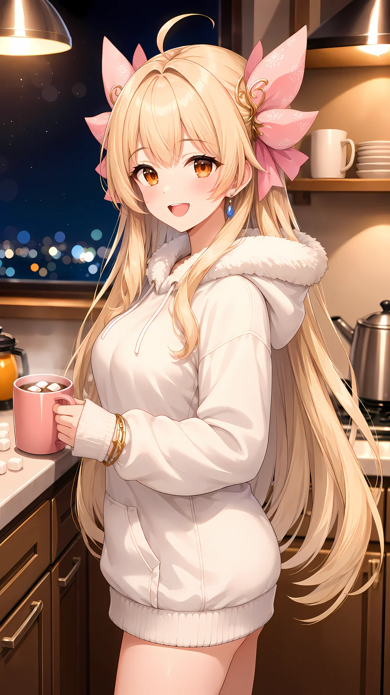

ComfyUI 用2026-11-29
ComfyUI（Anima）に貼るだけで、冬の夜の台所の一枚に。電球のあかりがともる台所で、白いもこもこのパーカーの女の子が、ホットチョコのマグのそばで、マシュマロをひとつつまんで持ち上げ、こちらに振り向いて笑いかけます。うしろの棚とやかん、あたたかい灯りのボケまで出ます。LoRA がある人とない人の2通りの書き方を載せてあります。
作例

※作例の画像の転載・保存しての再配布はご遠慮ください。
3人のおしゃべり（冬の夜の台所のホットチョコ）
ルピナス
……マシュマロ、ひとつ？ ふたつ？ 夜だし、ひとつにしておこうかな……
フィオナ
お姉ちゃん、台所で迷っているんですか？ 今日の配布は、冬の夜の台所でホットチョコにマシュマロを入れる一枚ですね

ルピナス
そうなの。ComfyUI と Anima 用のシーンのプロンプトで、LoRA がある人とない人の2通りの書き方を載せたよ

フィオナ
服は white hoodie と fluffy、fur-trimmed hood。もこもこの白いパーカーで、フードのふちにファーがつきます
ルピナス
台所は kitchen と shelf と kettle。うしろの棚にマグが並んで、コンロにやかんが出たよ
ルピナス
作例の私は、片手でマシュマロをつまんで口もとに持ち上げて、もう片方の手でピンクのマグを持ってた
フィオナ
わたしも同じでした。マシュマロをつまんだまま、ふり向いて笑っていて……落とす前の、いちばんわくわくする顔です
アイリス
……えっとね、あたしの作例、マシュマロもうマグに入ってた！ マグ持って、飲む気まんまんだった！
ルピナス
アイリス、待ちきれなかったんだね……

アイリス
だって窓の外、夜の街の灯りがきらきらで、あったかいのがすぐ飲みたかったんだもん！
フィオナ
LoRA なしの試し焼きの2枚は、茶色いお団子の髪の子で、1枚はマシュマロをつまんで、1枚はマグを口もとに運んでいました
ルピナス
字が出ないように text と sign を、ケーキやお皿にならないように cake と plate を NEG に入れてあるよ
アイリス
書き換えるのは、いちばん上の髪と目の行だけだよ！ パーカーと台所の行は、そのままで大丈夫！
フィオナ
寒い夜に、ほっとひと息つきたい方にぴったりの一枚だと思います
アイリス
ねえ、三人でマグをくっつけて、マシュマロがとけきるまで待ってから飲もうよ！

ルピナス
いいね。あなたの子は、マシュマロいくつ入れるかな？
使い方（3ステップ）
- ComfyUI で Anima のモデルを読み、基本の画像生成（テキストから画像）の画面にする
- 下の A（LoRA なし）か B（LoRA あり）のポジティブと、ネガティブをワンタップでコピーして貼る
- 「推奨値」の大きさ・steps・CFG にして生成する（できれば 1.5 倍の hires fix も）
プロンプト
変えるのは1行目の色の付いたところだけ（先頭の
1girl, solo などはそのまま）- 使うプロンプトは2通り＝A. LoRA を持っていない人／B. 自分のキャラの LoRA を持っている人。どちらも丸ごとコピーして貼るだけ
- A はそのままでも綺麗な女の子で出ます。自分のキャラにするなら1行目の髪の色・髪型・目の色を書き換えるだけ
- B は1行目の
your_lora_triggerを自分の LoRA のトリガー語に置きかえるだけ（LoRA の強さは下の表） - 2行目から下（シーン）と、ネガティブプロンプトは変えずにそのまま
- 🚫 版権キャラの名前・版権キャラの LoRA を入れて使うのは固く禁止です（下の「配布ルール」）
A. LoRA を持っていない人（そのままでもOK）
ポジティブプロンプト
1girl, solo, medium hair, brown hair, hair bun, green eyes masterpiece, best quality, score_7, safe, cowboy shot, standing, from side, looking at viewer, smile, open mouth, blush, mug, hot chocolate, marshmallow, falling, hand up, kitchen, shelf, kettle, indoors, night, ceiling light, warm colors, depth of field, bokeh, light particles, white hoodie, fluffy, fur-trimmed hood, long sleeves, sleeves past wrists, earrings, bracelet
B. 自分のキャラの LoRA を持っている人
ポジティブプロンプト（LoRA 用）
masterpiece, best quality, score_7, year 2025, highres, absurdres, your_lora_trigger, 1girl, solo, cowboy shot, standing, from side, looking at viewer, smile, open mouth, blush, mug, hot chocolate, marshmallow, falling, hand up, kitchen, shelf, kettle, indoors, night, ceiling light, warm colors, depth of field, bokeh, light particles, white hoodie, fluffy, fur-trimmed hood, long sleeves, sleeves past wrists, earrings, bracelet
| LoRA のつなぎ方 | Load Diffusion Model（Anima）のうしろに LoraLoaderModelOnly を1つ足す（CLIP にはつながない） | |
|---|---|---|
| LoRA の強さ（strength_model） | 0.8〜0.9（作例は 0.85） | |
| 1行目 | your_lora_trigger を自分の LoRA のトリガー語に置きかえる（髪や目の色は LoRA が覚えているので書かなくてOK） | |
ネガティブプロンプト（B 用）
lowres, bad quality, worst quality, score_1, score_2, score_3, poorly drawn, flat color, sketch, jpeg artifacts, mutated, ugly, disfigured, long body, bad anatomy, bad hands, missing fingers, extra fingers, simple background, transparent background, blurry, furry, child, loli, chibi, baby face, signature, watermark, artist name, username, web address, patreon username, logo, detailed pupils, sparkling eyes, twinkling eyes, glowing pupils, glowing eyes, star-shaped pupils, colored highlight in pupil, extra fingers, missing fingers, fused fingers, bad hands, deformed hands, extra arms, extra legs, text, letters, signboard, sign, banner, label, japanese text, numbers, mirror, reflection, window reflection, 2girls, male, crowd, people, bag, phone, spoon, fork, cake, plate, outdoors, day, blue sky, chinese text, korean text, kanji, hiragana, katakana, calligraphy
作例の絵（ポストの絵）は、この B のポジティブとネガティブで作りました（
your_lora_trigger のところに、その子の LoRA のトリガー語と見た目の語を入れただけ・語の順番もこのまま）。そのあと手だけを描き直す仕上げと 4K への拡大をしています。ネガティブプロンプト（A 用）
worst quality, low quality, lowres, bad anatomy, bad hands, extra fingers, missing fingers, fused fingers, blurry, jpeg artifacts, text, watermark, signature, logo, extra person, multiple girls, cropped, out of frame, extra fingers, missing fingers, fused fingers, bad hands, deformed hands, extra arms, extra legs, text, letters, signboard, sign, banner, label, japanese text, numbers, mirror, reflection, window reflection, 2girls, male, crowd, people, bag, phone, spoon, fork, cake, plate, outdoors, day, blue sky, chinese text, korean text, kanji, hiragana, katakana, calligraphy
必要なもの（ComfyUI）
🧩 カスタムノードは使っていません。LoRA が無くても大丈夫（A のプロンプト）。ComfyUI の基本の画像生成（テキストから画像）に、ポジティブ・ネガティブを貼って、下の推奨値にするだけです。LoRA を使う人は「LoraLoaderModelOnly」を1つ足すだけ（B のプロンプト）。
| モデル | ファイル | 置き場 |
|---|---|---|
| Anima 系のモデル（本体） | お好きな Anima 系のモデル | models/diffusion_models |
| テキストエンコーダ | Anima と一緒に配られているもの | models/text_encoders |
| VAE | Anima と一緒に配られているもの | models/vae |
推奨値
| 大きさ | 864×1536（縦長） | |
|---|---|---|
| steps | 30 | |
| CFG | 4.5 | |
| sampler | er_sde | |
| scheduler | beta | |
| hires fix（任意） | 1.5 倍に拡大して denoise 0.4・同じ steps と CFG（試し焼きはこれ） | |
| LoRA | 無くてOK（A のプロンプト）。自分のキャラの LoRA があれば B のプロンプトで | |
メモ
- いちばん上の行（髪の色・長さ・目の色）だけ、あなたの子に合わせて書き換えてください。2行目から下（パーカー・台所）は変えなくて大丈夫です。
- 縦長（864×1536）で、腰から上の構図（cowboy shot）を横から写します（from side）。立ってこちらを見て笑います（standing, looking at viewer, smile, open mouth, blush）。
- マグとマシュマロは mug・hot chocolate・marshmallow、マシュマロをつまむ手は hand up・falling です。
- 服は white hoodie・fluffy・fur-trimmed hood・long sleeves・sleeves past wrists、小物は earrings・bracelet です。
- 場所は kitchen・shelf・kettle・indoors・night・ceiling light・warm colors、ボケと光の粒は depth of field・bokeh・light particles です。
- 字が出ないように text・letters・sign・label・numbers を、ケーキやお皿にならないように spoon・fork・cake・plate を、昼や外にならないように outdoors・day・blue sky を、ほかの人が出ないように 2girls・male・people を NEG に入れてあります。
- 作例では、ルピナスとフィオナと LoRA なしの1枚はマシュマロをつまんで口もとに持ち上げ、アイリスはマシュマロの入ったマグを持つだけでした。マシュマロを落とす瞬間にしたいときは、ポーズの行に dropping marshmallow into mug を足して何枚か焼いてください。
- パーカーは丈が長く、作例ではどれも下にズボンやスカートが見えませんでした。はかせたいときは、服の行に shorts か pajama pants を足してください。
- 窓の外は夜の街の灯りのボケになりました。看板やマグの字は、作例のどの絵にも出ませんでした。
配布ルール
- ⭕ プロンプトの改変は自由です。
- ⭕ 生成した画像は SNS に投稿して大丈夫です。
- ❌ プロンプト文そのものの転載・再配布・販売はしないでください。
- ❌ 自作のプロンプトだと名乗ることはやめてください。
- ❌ このページの作例画像の無断転載はしないでください。
- 🚫 アニメ・漫画・ゲームなどの版権キャラクター（著作権・商標のあるキャラ）、他の人のキャラクターやイラスト、実在の人物の写真を添付画像にして使うことは固く禁止します。版権キャラの名前や、版権キャラの LoRA を入れて使うことも禁止です。
- ✅ 添付してよいのは、自分で作ったキャラクター・自分が権利を持つ画像（または権利者から使ってよいと言われた画像）だけです。
- ⚠️ 生成した画像の使い方（投稿・公開など）は、使った人の責任でお願いします。権利の問題が起きても、配布者は責任を負えません。
- 💌 使ったら #ルピナスプロンプト を付けて見せてくれたら、とても嬉しいです（任意です）。
📚 これまでの配布プロンプト（バックナンバー）が見たい方は、直接ルピナスまでお気軽にお問い合わせください。